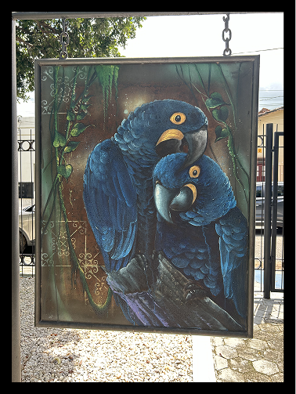

Algumas obras de artistas locais
Venha nos fazer uma Visita
A ENTRADA É GRATIS!
Horário de funcionamento: Terça a Sexta feira, das 9:00hrs às 17:00hrs; Sábado e Domingo, das 9:00hrs às 13:00hrs
R. Cinco de Abril - Velha Marabá. Marabá - PACONHEÇA O MUSEU
Mais do que lazer: um espaço de conhecimento, cultura, memória e encontro para toda a família!
@museumaraba
museumarabamidias@gmail.com